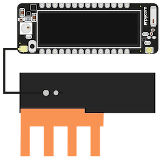
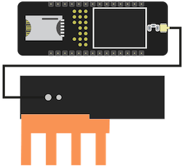

The following tutorial demonstrates the use of the LTE CAT-M1 and NB-IoT functionality on cellular enabled Pycom modules.
Before you start, make sure that your Simcard is registered and activated with your carrier.
This page discusses the usage of the LTE modem in more detail:
The LTE modem needs to run a specific firmware depending on the network you want to use. To check the current modem firmware, you can use the following
import sqnsupgrade
print(sqnsupgrade.info())
or
from network import LTE
lte = LTE()
print(lte.send_at_cmd('ATI1'))
The bottom two lines explain the LTE firmware edition:
Check the LTE modem update page on how to get the correct version loaded.
When using the LTE network, Always connect the appropriate antenna to your device. See the figures below for the correct antenna placement.
| Gpy | Fipy |
|---|---|
|  |  |
GPy and FiPy support both LTE CAT-M1 and NB-IoT. These are newer, low power, long range, cellular protocols. They are not the same as the full version of 2G/3G/LTE supported by cell phones, and require your local carriers to support them. At the time of writing, CAT-M1 and NB-IoT connectivity is not widely available so be sure to check with local carriers if support is available where you are. Together with the SIM card, the provider will supply you with configuration details: Usually band and APN. Use these in the example code below.
from network import LTE
import time
import socket
lte = LTE()
#some carriers have special requirements, check print(lte.send_at_cmd("AT+SQNCTM=?")) to see if your carrier is listed.
#when using verizon, use
#lte.init(carrier=verizon)
#when usint AT&T use,
#lte.init(carrier=at&t)
#some carriers do not require an APN
#also, check the band settings with your carrier
lte.attach(band=20, apn="your apn")
print("attaching..",end='')
while not lte.isattached():
time.sleep(0.25)
print('.',end='')
print(lte.send_at_cmd('AT!="fsm"')) # get the System FSM
print("attached!")
lte.connect()
print("connecting [##",end='')
while not lte.isconnected():
time.sleep(0.25)
print('#',end='')
#print(lte.send_at_cmd('AT!="showphy"'))
print(lte.send_at_cmd('AT!="fsm"'))
print("] connected!")
print(socket.getaddrinfo('pybytes.pycom.io', 80))
lte.deinit()
#now we can safely machine.deepsleep()
The last line of the script should return a tuple containing the IP address of the Pycom webserver.
Note: the first time, it can take a long while to attach to the network.
When using the Pycom simcard, you can use the above example to connect to the Vodafone LTE network using apn=pycom.io and the correct band. Leaving the band open will allow the modem to scan all available bands, which can take very long. You can use the Pycom simcard to relay your signal data to Pybytes using the Pybytes API. More information about the Pycom simcard can be found in the webshop and in the Vodafone simcard FAQ. It is not possible to connect to any other resources on the internet.
In some regions, you might be successful in creating a connection, but receive the following error when sending signals:
OSError: [Errno 202] EAI_FAIL
# Check if the following is true:
>>> socket.dnsserver()
('0.0.0.0', '0.0.0.0')
In that case, you will have to manually start the LTE connection using the example above, and set the DNS servers before starting Pybytes. You can add the following lines:
socket.dnsserver(0, '172.31.16.100')
socket.dnsserver(1, '172.31.32.100')
print(socket.dnsserver()) # Verify if the servers are set correctly
You need firmware 1.20.2.r2 or later for this functionality
It is possible that the LTE modem loses connectivity. It could be due to some radio interference, maybe the reception in the location of the module is not too good. Or if the module is being physically moved to another location with worse reception.
If the connectivity is lost this will in general not be reflected when you check lte.isconnected(). However, the lte modem sends a UART break signal. You can receive these events by using the lte_callback functionality. When connectivity is lost, the modem will try it’s best to re-establish connectivity and this also works well in general. When connectivity is re-established, the modem will send another break signal, ie, the lte_callback will fire again.
This means the best practice is to capture the callback and inside the callback test whether the module is connected or not. If, with some timeout, there really is no connection, then one can try to react to this. Let’s say the application is a sensor, that is most of the time in deepsleep, wakes up once in a while, measures something and then tries to send it’s measurement before going back to deepsleep. In this case one could simply log the event, go back to sleep and hope that in the next interval the reception will be better. Or, if there is some alternative connectivity implemented, one could trigger it at this point.
def lte_cb_handler(arg):
ev = arg.events() # NB: reading the events also clears them
print("LTE CB", time.time(), ev, time.gmtime())
pycom.rgbled(0x222200)
if ev & LTE.EVENT_BREAK:
print("LTE CB", "uart break signal")
print("LTE CB", time.time(), "test connection")
# TBD: write your own test_connection function
if test_connection():
print("LTE CB", time.time(), "connection ok")
else:
print("LTE CB", time.time(), "connection not ok")
# TBD: implement handling of lost connection
# machine.deepsleep(deepsleeptime)
lte_callback(LTE.EVENT_BREAK, lte_cb_handler)
Below you can find a detailed troubleshooting guide discussing
When you add debug=True to the initialization, e.g. lte = LTE(debug=True) then the AT commands sent to the modem and the responses will be printed to the REPL. This can help with diagnosing problems with the LTE module.
The first time when the modem tries to attach to the network the scan process can take a long time. This is especially true with NB-IoT. Also it makes a very big difference whether the band to be used is specified with the attach() command with the band or bands parameters. In the worst cases, if many or large bands need to be scanned, this might take in the order of half an hour for the first attach. If the band is not specified, the modem might fall back to scanning all bands which could take even longer or fail altogether. So, it is always advised to specify the band.
When the first attach succeeds the modem will store the frequency internally. Subsequent attach attempts will try the stored frequency first and should attach in seconds. Only if that frequency fails, will the modem fall back to scanning.
After flashing a new firmware or performing a factory reset, the next attach will be a “first” . Changing operators might imply a “first scan”. Changes of the geographic location, could in principle also lead to a change of frequency and a “first scan”, but this is less likely.
If you downgrade the Pycom firmware from 1.20.2.r2 or any later version to some older version, then you need to manually run this snippet of code, otherwise the firmware will not be able to attach.
```python
from network import LTE
lte = LTE()
print(lte.send_at_cmd('AT+CEREG=2'))
```
This adjusts the CEREG setting in the LTE modem. This setting determines the verbosity with which the modem reports the registration status. Older firmwares (1.20.2.r1 and earlier) expect this value to be 2. This had always been the default value and so it just worked. Starting with version v1.20.2.r2 the firmware expects a value of 1 and it also configures it that way. So, this also just works.
But, lets say you downgrade from v1.20.2.r2 to v1.20.2.r1 then the modem will remember the new setting of 1 and the older firmware will now fail to detect the attached state and never report lte.isattached()==True. With the lines above you can correct this setting. If in doubt you can check the current setting like this:
python print(lte.send_at_cmd('AT+CEREG?'))
It will return something similar to one of these lines:
+CEREG: 2,0 +CEREG: 2,1,"0001","01A2D001",7 +CEREG: 1,4 +CEREG: 1,0
In this context we care about that first number. You want this to be 2, like in the first two examples. Then you’re good to go with older firmwares.
Below, we review the state transitions of the modem firmware as reported by print(lte.send_at_cmd('AT!="fsm"')). If you are having trouble attaching to the network, or getting a connection up and running, this might give some direction into what you are looking for. We are mainly looking at the status of the top two indicators for now.
Before calling lte.attach(), the status will be STOPPED.
SYSTEM FSM
==========
+--------------------------+--------------------+
| FSM | STATE |
+--------------------------+--------------------+
| RRC TOP FSM |STOPPED |
| RRC SEARCH FSM |NULL |
| RRC ACTIVE FSM |NULL |
| PMM PLMN FSM |NULL |
| EMM MAIN FSM |NULL |
| EMM AUTH FSM |NULL |
| EMM CONN FSM |NULL |
| EMM TAU FSM |NULL |
| EMM TEST FSM |NULL |
| ESM BEARER FSM |BEARER_NULL |
| SMS MT FSM |IDLE |
| SMS MO FSM |IDLE |
| HP MAIN FSM |IDLE |
| HP USIM FSM |READY |
| HP SMS MO FSM |IDLE |
| HP SMS MT FSM |IDLE |
| HP CAT FSM |IDLE |
+--------------------------+--------------------+
With no SIM card detected, the RRC TOP FSM will keep status CAMPED. You will see HP USIM FSM marked ABSENT.
SYSTEM FSM
==========
+--------------------------+--------------------+
| FSM | STATE |
+--------------------------+--------------------+
| RRC TOP FSM |CAMPED |
| RRC SEARCH FSM |CAMPED_ANY |
| RRC ACTIVE FSM |IDLE |
| PMM PLMN FSM |ANY_CAMPED |
| EMM MAIN FSM |NULL |
| EMM AUTH FSM |NULL |
| EMM CONN FSM |NULL |
| EMM TAU FSM |NULL |
| EMM TEST FSM |NULL |
| ESM BEARER FSM |BEARER_NULL |
| SMS MT FSM |IDLE |
| SMS MO FSM |IDLE |
| HP MAIN FSM |IDLE |
| HP USIM FSM |ABSENT |
| HP SMS MO FSM |IDLE |
| HP SMS MT FSM |IDLE |
| HP CAT FSM |NULL |
+--------------------------+--------------------+
SIM card inserted and attaching:
SCANNING, the RRC SEARCH FSM goes from WAIT_RSSI to WAIT_CELL_IDRRC TOP FSM goes from SCANNING to SYNCINGWAIT_RSSI, check the antenna connectionSYNCING to CAMPED, check the network availability, simcard placement and / or the firmware version.SYSTEM FSM
==========
+--------------------------+--------------------+
| FSM | STATE |
+--------------------------+--------------------+
| RRC TOP FSM |SCANNING |
| RRC SEARCH FSM |WAIT_RSSI |
| RRC ACTIVE FSM |NULL |
| PMM PLMN FSM |NORM_WAITCELL |
| EMM MAIN FSM |NULL |
| EMM AUTH FSM |NULL |
| EMM CONN FSM |NULL |
| EMM TAU FSM |NULL |
| EMM TEST FSM |NULL |
| ESM BEARER FSM |BEARER_NULL |
| SMS MT FSM |IDLE |
| SMS MO FSM |IDLE |
| HP MAIN FSM |IDLE |
| HP USIM FSM |READY |
| HP SMS MO FSM |IDLE |
| HP SMS MT FSM |IDLE |
| HP CAT FSM |IDLE |
+--------------------------+--------------------+
Connecting
SYSTEM FSM
==========
+--------------------------+--------------------+
| FSM | STATE |
+--------------------------+--------------------+
| RRC TOP FSM |CONNECTING |
| RRC SEARCH FSM |CAMPED |
| RRC ACTIVE FSM |WAIT_SMC |
| PMM PLMN FSM |NORM_CAMPED |
| EMM MAIN FSM |REGISTERED_INIT |
| EMM AUTH FSM |WAITING_SIM_CONFIRM |
| EMM CONN FSM |AS_ESTABLISHED |
| EMM TAU FSM |NULL |
| EMM TEST FSM |NULL |
| ESM BEARER FSM |BEARER_NULL_PENDING_ACTIVE|
| SMS MT FSM |IDLE |
| SMS MO FSM |IDLE |
| HP MAIN FSM |IDLE |
| HP USIM FSM |READY |
| HP SMS MO FSM |IDLE |
| HP SMS MT FSM |IDLE |
| HP CAT FSM |IDLE |
+--------------------------+--------------------+
Connected
SYSTEM FSM
==========
+--------------------------+--------------------+
| FSM | STATE |
+--------------------------+--------------------+
| RRC TOP FSM |CONNECTED |
| RRC SEARCH FSM |CAMPED |
| RRC ACTIVE FSM |CONNECTED |
| PMM PLMN FSM |NORM_CAMPED |
| EMM MAIN FSM |REGISTERED |
| EMM AUTH FSM |KASME_DEFINED |
| EMM CONN FSM |AS_ESTABLISHED |
| EMM TAU FSM |NULL |
| EMM TEST FSM |NULL |
| ESM BEARER FSM |BEARER_ACTIVE |
| SMS MT FSM |IDLE |
| SMS MO FSM |IDLE |
| HP MAIN FSM |IDLE |
| HP USIM FSM |READY |
| HP SMS MO FSM |IDLE |
| HP SMS MT FSM |IDLE |
| HP CAT FSM |IDLE |
+--------------------------+--------------------+
In order to capture all state transitions in a log file during an attach, you can use this snippet:
# initiate the attach
lte.attach()
# turn off debugging if it was turned on before
# otherwise there is too much details/noise in the logfile
lte.init(debug=False)
rsrpq = None
fsm = None
while not lte.isattached():
rsrpq2 = lte.send_at_cmd('AT+CESQ').strip()
if rsrpq2 != rsrpq:
rsrpq = rsrpq2
print(time.time(), rsrpq)
fsm2 = lte.send_at_cmd('AT!="fsm"').strip()
if fsm != fsm2:
fsm=fsm2
print(time.time(), fsm)
time.sleep(0.1)
print(time.time(), "attached")
* `OSError: [Errno 202] EAI_FAIL`: Check the data plan / SIM activation status on network